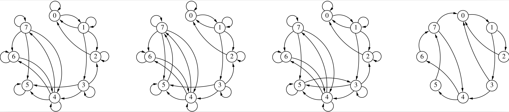

Lesson 7: structural analysis of Markov chains
This C++ notebook is the notebook form of Example 7. It constructs four discrete-time Markov chains of size 8 and performs a structural analysis on each of them.
Import the modules
The example uses the Markov chain API together with sparse matrices.
[2]:
// --- Standard C++ utilities used in this notebook ---
#include <iostream>
#include <vector>
// --- Marmote headers used in this lesson ---
#include <marmoteCore/marmoteSparseMatrix.h>
#include <marmoteMarkovChain/marmoteMarkovChain.h>
// --- Convenience declarations for the cells below ---
using namespace std;
using namespace marmote;
Analysis procedure
The helper below reproduces the analysis routine from the C++ example: diagnostic of the generator, absorbing states, communicating classes, recurrent classes and period.
[3]:
// Define the analysis procedure used for each Markov chain.
void analyzeChainNotebook(MarkovChain* mc) {
if (mc == nullptr) {
cout << "The Markov chain pointer is null. Re-run the creation cell before analysis." << endl;
return;
}
TransitionStructure* gen = mc->generator();
if (gen == nullptr) {
cout << "The chain has no generator attached. Re-run the attachment cell before analysis." << endl;
return;
}
SparseMatrix* sp = dynamic_cast<SparseMatrix*>(gen);
if (sp == nullptr) {
cout << "The generator is not a SparseMatrix in this notebook context." << endl;
return;
}
cout << "# Generator general diagnostic:" << endl;
sp->Diagnose();
cout << "# Absorbing states:" << endl;
vector<cardinalType> abs = mc->AbsorbingStates();
cout << "number = " << abs.size() << endl;
cout << "list = ( ";
for (vector<cardinalType>::iterator iter = abs.begin(); iter != abs.end(); iter++) {
cout << *iter << " ";
}
cout << ")" << endl;
cout << "# Communicating classes:" << endl;
vector<vector<cardinalType>> com = mc->CommunicatingClasses();
cout << "number = " << com.size() << endl;
cout << "list = ( ";
for (vector<vector<cardinalType>>::iterator iter = com.begin(); iter != com.end(); iter++) {
cout << "[ ";
for (vector<cardinalType>::iterator itr = (*iter).begin(); itr != (*iter).end(); itr++) {
cout << *itr << " ";
}
cout << "] ";
}
cout << ")" << endl;
cout << "# Recurrent classes:" << endl;
vector<vector<cardinalType>> rec = mc->RecurrentClasses();
cout << "number = " << rec.size() << endl;
cout << "list = ( ";
for (vector<vector<cardinalType>>::iterator iter = rec.begin(); iter != rec.end(); iter++) {
cout << "[ ";
for (vector<cardinalType>::iterator itr = (*iter).begin(); itr != (*iter).end(); itr++) {
cout << *itr << " ";
}
cout << "] ";
}
cout << ")" << endl;
cout << "# Period: " << mc->Period() << endl;
}
Build the four chains
We first create the four Markov chains and the four sparse transition matrices that will be attached to them.
[4]:
// Create four discrete-time Markov chains of size 8.
MarkovChain* c1 = new MarkovChain(8, DISCRETE);
MarkovChain* c2 = new MarkovChain(8, DISCRETE);
MarkovChain* c3 = new MarkovChain(8, DISCRETE);
MarkovChain* c4 = new MarkovChain(8, DISCRETE);
// Create four sparse transition matrices of size 8 x 8.
SparseMatrix* P1 = new SparseMatrix(8);
SparseMatrix* P2 = new SparseMatrix(8);
SparseMatrix* P3 = new SparseMatrix(8);
SparseMatrix* P4 = new SparseMatrix(8);
Fill the transition matrices
The first three chains differ only by a few transitions around state 5. The fourth one has a different connectivity structure.
[5]:
if (P1 == nullptr || P2 == nullptr || P3 == nullptr || P4 == nullptr) {
cout << "Transition matrices are not available. Re-run the creation cell first." << endl;
} else {
// Fill the first transition matrix.
P1->addToEntry(0, 0, 0.2);
P1->addToEntry(0, 1, 0.8);
P1->addToEntry(1, 0, 0.25);
P1->addToEntry(1, 1, 0.25);
P1->addToEntry(1, 2, 0.25);
P1->addToEntry(1, 3, 0.25);
P1->addToEntry(2, 0, 0.6);
P1->addToEntry(2, 2, 0.4);
P1->addToEntry(3, 2, 0.3);
P1->addToEntry(3, 3, 0.2);
P1->addToEntry(3, 4, 0.25);
P1->addToEntry(3, 5, 0.25);
P1->addToEntry(4, 4, 0.1);
P1->addToEntry(4, 5, 0.3);
P1->addToEntry(4, 6, 0.3);
P1->addToEntry(4, 7, 0.3);
P1->addToEntry(5, 5, 1.0);
P1->addToEntry(6, 4, 0.5);
P1->addToEntry(6, 6, 0.5);
P1->addToEntry(7, 4, 0.4);
P1->addToEntry(7, 5, 0.2);
P1->addToEntry(7, 6, 0.2);
P1->addToEntry(7, 7, 0.2);
// Fill the second transition matrix.
P2->addToEntry(0, 0, 0.2);
P2->addToEntry(0, 1, 0.8);
P2->addToEntry(1, 0, 0.25);
P2->addToEntry(1, 1, 0.25);
P2->addToEntry(1, 2, 0.25);
P2->addToEntry(1, 3, 0.25);
P2->addToEntry(2, 0, 0.6);
P2->addToEntry(2, 2, 0.4);
P2->addToEntry(3, 2, 0.3);
P2->addToEntry(3, 3, 0.2);
P2->addToEntry(3, 4, 0.25);
P2->addToEntry(3, 5, 0.25);
P2->addToEntry(4, 4, 0.1);
P2->addToEntry(4, 5, 0.3);
P2->addToEntry(4, 6, 0.3);
P2->addToEntry(4, 7, 0.3);
P2->addToEntry(5, 5, 0.5);
P2->addToEntry(5, 7, 0.5);
P2->addToEntry(6, 4, 0.5);
P2->addToEntry(6, 6, 0.5);
P2->addToEntry(7, 4, 0.4);
P2->addToEntry(7, 5, 0.2);
P2->addToEntry(7, 6, 0.2);
P2->addToEntry(7, 7, 0.2);
// Fill the third transition matrix.
P3->addToEntry(0, 0, 0.2);
P3->addToEntry(0, 1, 0.8);
P3->addToEntry(1, 0, 0.25);
P3->addToEntry(1, 1, 0.25);
P3->addToEntry(1, 2, 0.25);
P3->addToEntry(1, 3, 0.25);
P3->addToEntry(2, 0, 0.6);
P3->addToEntry(2, 2, 0.4);
P3->addToEntry(3, 2, 0.3);
P3->addToEntry(3, 3, 0.2);
P3->addToEntry(3, 4, 0.25);
P3->addToEntry(3, 5, 0.25);
P3->addToEntry(4, 4, 0.1);
P3->addToEntry(4, 5, 0.3);
P3->addToEntry(4, 6, 0.3);
P3->addToEntry(4, 7, 0.3);
P3->addToEntry(5, 3, 0.5);
P3->addToEntry(5, 5, 0.5);
P3->addToEntry(6, 4, 0.5);
P3->addToEntry(6, 6, 0.5);
P3->addToEntry(7, 4, 0.4);
P3->addToEntry(7, 5, 0.2);
P3->addToEntry(7, 6, 0.2);
P3->addToEntry(7, 7, 0.2);
// Fill the fourth transition matrix.
P4->addToEntry(0, 1, 1.0);
P4->addToEntry(1, 2, 0.5);
P4->addToEntry(1, 3, 0.5);
P4->addToEntry(2, 0, 1.0);
P4->addToEntry(3, 4, 1.0);
P4->addToEntry(4, 5, 0.4);
P4->addToEntry(4, 6, 0.6);
P4->addToEntry(5, 7, 1.0);
P4->addToEntry(6, 7, 1.0);
P4->addToEntry(7, 4, 0.4);
P4->addToEntry(7, 0, 0.6);
}
Attach the generators and analyse the chains
We now assign the matrices to the chains and run the structural analysis procedure.
[ ]:
if (c1 == nullptr || c2 == nullptr || c3 == nullptr || c4 == nullptr ||
P1 == nullptr || P2 == nullptr || P3 == nullptr || P4 == nullptr) {
cout << "Chains or matrices are not available. Re-run the previous cells first." << endl;
} else {
// Attach the matrices to the chains.
c1->set_generator(P1);
c2->set_generator(P2);
c3->set_generator(P3);
c4->set_generator(P4);
cout << "##### Analysis of chain #1" << endl;
analyzeChainNotebook(c1);
cout << endl << "##### Analysis of chain #2" << endl;
analyzeChainNotebook(c2);
cout << endl << "##### Analysis of chain #3" << endl;
analyzeChainNotebook(c3);
cout << endl << "##### Analysis of chain #4" << endl;
analyzeChainNotebook(c4);
}

[7]:
// Release the Markov chains created in this lesson.
delete c1;
c1 = nullptr;
delete c2;
c2 = nullptr;
delete c3;
c3 = nullptr;
delete c4;
c4 = nullptr;
// The sparse matrices are owned by the chains once attached.
P1 = nullptr;
P2 = nullptr;
P3 = nullptr;
P4 = nullptr;